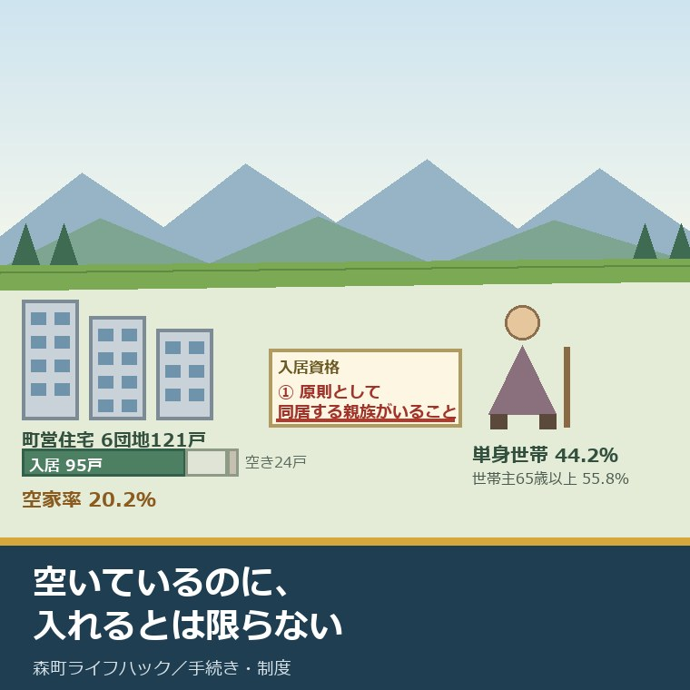
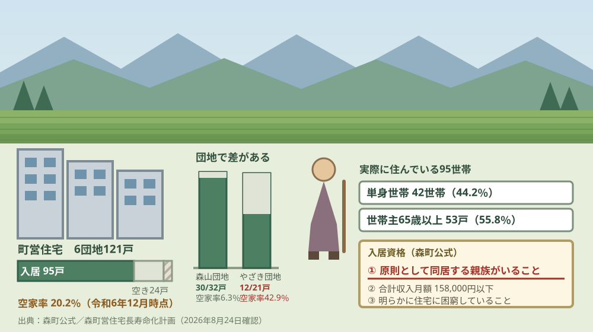
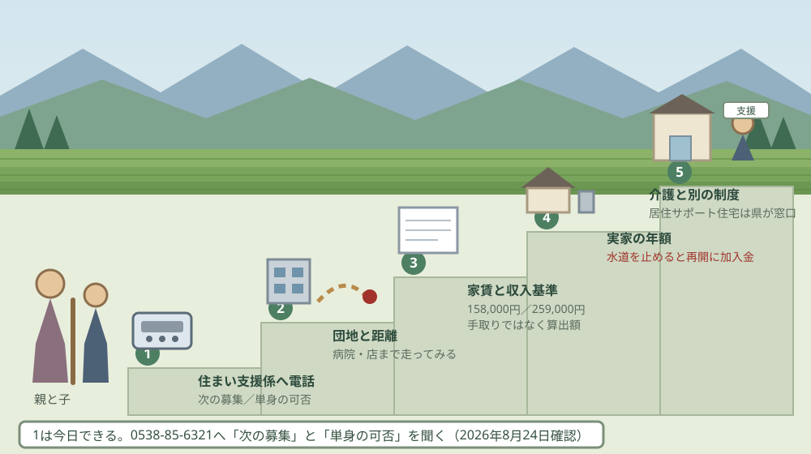

森町の町営住宅は6団地121戸｜親が一人になった後の住まい

この記事の要点
Q. 実家が広すぎて親一人では持て余しています。森町の町営住宅に移ることはできますか。
A. 森町の町営住宅は6団地121戸で、令和6年12月時点の入居は95戸、空家率は20.2％です。ただし入居資格の第1項は「原則として同居する親族がいること」。単身で申し込めるかは、定住推進課住まい支援係（0538-85-6321）に先に確認してください。
静岡県周智郡森町（遠州森町）の実家に、親が一人で住んでいる。部屋が余り、庭が荒れ、掃除と草刈りだけで一日が終わる。この記事は、そういうご家族に向けて書いています。
「町営住宅に移れないか」という相談は、実家じまいの話をしていると必ず出てきます。家賃が安く、町内に留まれて、家の維持から解放される。選択肢として自然です。
ただ、公表資料を読むと、入り口の条件が思っていたのと違います。森町公式が並べている入居資格の第1項は、「原則として、同居又は同居しようとする親族がいること」です。
今日は2026年8月24日。2025年10月1日には、改正住宅セーフティネット法が施行され、居住サポート住宅という新しい枠組みも始まっています。町営住宅の外にも、道が増えました。
数字と条件を、順に並べます。数えたあとで、今日できることを書きます。
公式情報から確定できること
2026年8月24日時点で、森町公式、森町営住宅長寿命化計画、国土交通省、静岡県公式から確認できたことを並べます。森町の町営住宅は6団地121戸です。出典は記事の末尾に載せています。
一つ目。団地は6つです。森町公式によれば、町営住宅は天宮団地、大門団地、森山団地、中川団地、中川第2団地、やざき団地の6団地で、総戸数は121戸です。
二つ目。棟の数まで数えると8棟です。森町営住宅長寿命化計画（令和7年3月改定）によれば、令和6年12月時点で6団地8棟121戸を管理しています。
三つ目。4戸に1戸以上は1980年代に建った建物です。同じ計画によれば、1980年代に64戸が建設されており、短期間に集中して整備されています。121戸の52.9％にあたります。
四つ目。入居しているのは95戸です。同じ計画の令和6年12月時点の数字では、入居95戸、一般の空き室24戸、募集を止めている空き室2戸。空家率は20.2％です。
五つ目。団地によって埋まり方が違います。同じ計画によれば、森山団地は32戸中30戸が入居で空家率6.3％、やざき団地は21戸中12戸で空家率42.9％。同じ町の中で、7倍近い差が付いています。
六つ目。世帯主の年齢は65歳以上が最も多い。同じ計画によれば、入居95戸のうち世帯主が65歳以上の世帯は53戸で55.8％。50代から64歳を足すと69戸、72.7％になります。
七つ目。単身世帯が42世帯で最も多い。同じ計画によれば、世帯人員別では単身42世帯（44.2％）、2人世帯29世帯（30.5％）。計画は「単身世帯のほとんどが、高齢者である」と書いています。
八つ目。収入は基準を大きく下回る世帯が多い。同じ計画によれば、収入分位1（月10.4万円以下）が95世帯中77世帯。入居収入基準の15.8万円を大きく下回る世帯が多いと記されています。
九つ目。入居資格は5つです。森町公式によれば、①原則として、同居又は同居しようとする親族（親族と同様の状況にある方を含む）がいること、②入居する全員の合計収入月額が158,000円以下であること、③現在、明らかに住宅に困窮していること（具体的な理由が必要）、④市町村税を滞納していないこと、⑤入居する全員が暴力団員でないこと、の5つです。
十番目。収入の基準が緩む世帯があります。同じページによれば、子育て世帯、障がい者がいる世帯、全員60歳以上の世帯などは、基準が259,000円に緩和されます。この収入月額は手取りの額ではなく、一定の算出方法で出すと注記されています。
十一番目。募集は年4回程度です。森町公式によれば、募集は年に4回程度行われ、入居時期は申込みから約2か月後以降。申込みは募集期間中に申込書と添付書類を窓口へ提出します。担当は定住推進課住まい支援係（0538-85-6321）です。
十二番目。倍率は1.0を下回っています。森町営住宅長寿命化計画によれば、全体の入居倍率は1.0を下回っており、大門・森山・中川団地のように生活利便性が高い地区にある団地では倍率が高い一方、天宮団地とやざき団地は倍率が低いと記されています。
十三番目。中川第2団地は募集していません。同じ計画によれば、中川第2団地は昭和53年建設で耐用年数を既に超過しており（経過率102.2％）、空き室は新規入居者の募集を行わず、計画期間中の用途廃止に向けた準備を進めるとされています。
十四番目。やざき団地はカビの問題を抱えています。同じ計画は、やざき団地について「高湿度による低層階部分での建物への被害等が問題となっており」、応急対策として給排水管の整備を予定するが「給排水管整備が抜本的なカビ対策とならない可能性がある」と書いています。
十五番目。エレベーターがあるのは1団地だけです。同じ計画によれば、手すりはすべての団地に設置されている一方、エレベーターは天宮団地にのみ設置されています。中層の耐火構造で3階建て・4階建ての住棟が中心です。
十六番目。広さは4人から6人向けです。同じ計画によれば、間取りは2LDKと3DK、住戸面積は60.2平方メートルから63.4平方メートル。最低居住面積水準から見ると、すべての町営住宅が4人から6人対応という状況だと記されています。
十七番目。維持には毎年お金がかかっています。同じ計画によれば、2015年から2024年の10年間の工事費は合計約1.8億円、年平均2,000万円程度。外壁改善、給水設備改善、エレベータ改修、公共下水道接続などの履歴が並んでいます。
十八番目。新しくは建てない方針です。同じ計画に引用された森町公共施設等総合管理計画の基本方針では、公営住宅について「今後は新規の建設を予定しない」「民間への譲渡や借上げによる家賃補助を含めて在り方を検討する」とされています。
十九番目。入居者の6割は町外から来ています。同じ計画によれば、直近10年の入居者の6割が町外から入居し、退去者の5割が町外へ退去しています。計画は「一定の戸数は、町内の住宅セーフティネット以外として機能していることが考えられる」と記しています。
二十番目。2025年10月1日に、住宅セーフティネットの法律が変わりました。国土交通省によれば、住宅確保要配慮者に対する賃貸住宅の供給の促進に関する法律等の一部を改正する法律（令和6年法律第43号）は令和6年6月5日公布、令和7年10月1日施行です。
二十一番目。居住サポート住宅という枠組みが始まりました。同省のリーフレットによれば、居住支援法人等が大家と連携し、①ICT等による安否確認、②訪問等による見守り、③生活・心身の状況が不安定化したときの福祉サービスへのつなぎ、を行う住宅です。
二十二番目。居住サポート住宅は2種類あります。同じ資料によれば、専用住宅は3つのサポートすべてが必要な方（要援助者）のみが入居でき、非専用住宅は要援助者以外も広く入居できて安否確認だけを提供する形などがあります。
二十三番目。終身建物賃貸借の手続も簡素化されました。同じリーフレットによれば、終身建物賃貸借は賃借人の死亡まで継続し、死亡時に終了して相続人に相続されない賃貸借です。対象は60歳以上で、単身者または配偶者もしくは60歳以上の親族と同居する者。契約は書面で行い、公正証書でなくてよいとされています。
二十四番目。森町の場合、認定の窓口は静岡県です。静岡県公式によれば、居住サポート住宅の認定は住宅が所在する福祉事務所設置自治体が行い、町村については静岡県住まいづくり課（電話054-221-3081）が申請窓口になります。
二十五番目。森町にはすでに登録された賃貸住宅があります。森町営住宅長寿命化計画は「森町では、既にセーフティネット住宅に登録した賃貸住宅があり、今後も必要に応じて空家等を対象とした制度活用を検討していく」と記しています。
二十六番目。高齢の親の相談先は保健福祉センターにあります。森町公式によれば、森町地域包括支援センターは森町保健福祉センター内（森町森50番地の1）にあり、電話0538-85-6341、受付は月曜日から金曜日の8時30分から17時15分（祝日と年末年始を除く）です。

この絵で描きたかったのは、空いている戸数と、入れる人の条件が噛み合っていない点です。24戸が空いているのに、入居資格の第1項は同居する親族がいることになっている。それでいて、実際に住んでいる95世帯のうち42世帯は単身です。
森町の家に置き換えると、何が起きるか
ここからは、公表された数字を割り戻します。私の計算であることを先に断っておきます。
まず、町全体に対する量から。令和7年国勢調査の速報値で森町の世帯数は6,095世帯ですから、121戸は2.0％にあたります。森町営住宅長寿命化計画も、公営住宅に居住する世帯は全世帯の2〜3％程度で2005年以降減り続けている、と記しています。
次に、維持費です。過去10年の工事費が年平均2,000万円ですから、121戸で割ると1戸あたり年間約165,000円。入居している95戸で割れば約210,000円です。
この額は、私の商売感覚では見慣れた桁です。森町で扱う空き家1軒の年間維持費、つまり固定資産税と火災保険と年2回の草刈りを足した額と、ほぼ同じになります。公営住宅も空き家も、建物を持ち続ける費用の水準は変わらない。
収入の基準も、月額から年額に直しておきます。158,000円は年1,896,000円、259,000円は年3,108,000円。ただしこれは手取りではなく、一定の算出方法で出す額なので、年金や給与の額面をそのまま当てはめることはできません。
ここからは、実家の側の話です。親が一人になったとき、多くのご家族はまず「家を空けたらどうなるか」で止まります。その先の順番を、私はいつも同じ形で案内しています。
実家を空けると、まず止まるのが水道です。森町には休止の制度がなく、いったん止めると再開時に加入金がかかります。この点は誰も住まない実家の水道について書いた記事に額まで整理しました。
次に効いてくるのが、移動です。町営住宅がどの地区にあるかで、親の通院と買い物の距離が変わります。免許を返した後の足については森町営バスと地域タクシーをまとめた記事に地区差を書きました。
そして、住所を選ぶときの見方です。インターチェンジが近いことと、日々の暮らしが楽なことは、別の話です。その違いはスマートICと暮らしやすさについて書いた記事にまとめています。
最後に、残された実家そのものの扱いです。町は10年の計画で空き家を見ています。実家がその中でどう位置づけられるかは第2期空家等対策計画から実家の位置を確かめた記事にあります。
良い点：森町の町営住宅の、よくできているところ
まず、森町の町営住宅と長寿命化計画のよくできているところを数えます。注文の前に置くのが、私の書き方の順番です。
一つ目。数字を隠していません。入居率も空家率も、団地ごとに公表されています。やざき団地の空家率42.9％のような、都合の良くない数字まで載せてあります。
二つ目。カビの問題を写真付きで書いています。やざき団地について、給排水管の整備が抜本的な対策にならない可能性まで明記されている。ここまで書く計画は、多くありません。
三つ目。耐震性は全戸で確認済みです。すべての町営住宅が新耐震基準で建設されているか、耐震診断によって耐震性が確認されている、と記されています。中川第2団地を除けば、計画期間内に耐用年数を超える住棟もありません。
四つ目。手すりは全団地に付いています。エレベーターは天宮団地だけですが、手すりの整備は6団地すべてで済んでいます。高齢の入居者が過半を占める実態に、最低限は合わせてある。
五つ目。空き室の使い道を、住宅の枠の外まで含めて検討しています。計画は、耐用年限に余裕があり耐震性も問題ない空きストックについて、お試し移住や民間の社宅としての目的外使用を検討すると書いています。空けたまま持つより、使い道を探す姿勢です。
注文したい点：親の住まいを探す側から見て足りないところ
その上で、一事業者として注文したい点を並べます。定住推進課住まい支援係も、限られた人数で6団地121戸を回していることは承知の上です。
一つ目。単身で申し込めるかどうかが、公表ページから読み取れません。入居資格の第1項は「原則として」と書かれていますが、その例外がどこまでかは書かれていない。実際の入居世帯の44.2％が単身であることと、募集要項の書き方が噛み合っていません。
二つ目。家賃の額が公表ページにありません。「安い家賃の住宅を提供する」とは書かれていますが、団地ごとの家賃の幅が分からない。親の年金で足りるかどうかを家族が判断するには、この数字が要ります。
三つ目。次の募集がいつかが分かりません。年4回程度という書き方だけでは、いま動くべきか、3か月待つべきかが決められません。入居まで約2か月かかるのですから、逆算するには日付が要ります。
四つ目。「住宅に困窮している」の具体例が示されていません。具体的な理由が必要だとは書かれていますが、実家が広すぎる、階段が上れない、といった理由が当たるのかどうかは読み取れない。ここで諦めてしまう家族が出ます。
五つ目。広さが世帯構成と合っていません。間取りは2LDKと3DK、面積は60平方メートル台で、計画自身が4人から6人対応と書いています。一方で入居の44.2％は単身です。一事業者としては、単身向けの住戸への転換を望みます。

対案・結論：今日、家族が確かめられること
結論を急がないと決めたうえで、今日から動ける順番を書きます。順番はイラストのとおりです。
| 順番 | 確かめること | 確認先 |
|---|---|---|
| 1 | 次の募集はいつか。単身での申込みができるか | 森町 定住推進課住まい支援係 0538-85-6321 |
| 2 | どの団地に空きがあるか。その団地から病院と店までの距離 | 同じ窓口と、実際に一度歩く・車で走る |
| 3 | 家賃の額と、収入月額の算出方法 | 同じ窓口。158,000円か259,000円かで判定が変わる |
| 4 | 実家を空けた場合の水道・電気・火災保険・草刈りの年額 | 森町の水道担当窓口と、契約中の保険会社 |
| 5 | 介護と見守りが必要な段階かどうか | 森町地域包括支援センター 0538-85-6341 |
| 6 | 町営住宅以外の道（居住サポート住宅など）があるか | 静岡県住まいづくり課 054-221-3081 |
1は、今日できます。電話で聞くのは2つだけです。次の募集はいつか、単身で申し込めるか。この2つが分かれば、動く時期が決まります。
2は、週末にできます。空きがある団地から、かかりつけの医院とスーパーまでを実際に一度走ってみてください。地図の上の近さと、毎日の近さは違います。
3は、家計の話です。収入月額は手取りではなく、一定の算出方法で出します。年金の額面を見て「基準を超えている」と自己判断すると、申し込めたはずの家が選択肢から落ちます。
4は、実家の側の数字です。親が町営住宅に移っても、実家の維持費はゼロになりません。水道を止めれば再開に加入金がかかり、草は同じように伸びます。
5は、住まいより先に来ることがあります。階段が上れない、火の始末が不安、という段階なら、住まいの前に介護の相談です。森町地域包括支援センターは、生活・健康・財産管理の相談まで受けています。
6は、2025年10月1日に始まった新しい道です。森町には、すでにセーフティネット住宅に登録された賃貸住宅があります。居住サポート住宅の認定は静岡県が窓口なので、町の窓口と県の窓口の両方を当たることになります。
家族に残す記録
ここからは、確認した内容を紙1枚に残すための項目です。次の募集のときに、同じことを一から聞き直さないためのものです。
書き留めるのは、次の募集の時期、単身申込みの可否、空きがある団地の名前、その団地の家賃の額、収入月額の判定結果、確認した日付です。この6つで、次の募集に間に合うかどうかが判断できます。
あわせて、実家の名義と地番、固定資産税の年額、水道の名義と口径、火災保険の満期日、草刈りを頼んでいる先の連絡先、親の要介護度と担当ケアマネジャーの名前を並べておきます。住まいを移す判断は、この両側がそろってから決めるものです。
実家の名義、境界、農地、道路まで含めて順に整理したい方は、ふじがおか実家カルテの森町相談窓口もご利用ください。住所が分かれば、建物と敷地のどちらについても、確認する順番を整理できます。
大石の視点
ここからは、私（大石浩之）の個人の考えです。公的な事実とは分けてお読みください。私自身が森町の町営住宅の入居手続に立ち会った経験があるわけではありません。以下は、公表資料を家計と立地の目で読んだ私の見方です。
今日、結論を出す必要はありません。ただ、次の募集の時期と、単身で申し込めるかどうかだけは、今日のうちに聞いておいてください。この2つが分かるまで、他の判断は動かせません。
数字を並べていて、いちばん引っかかったのはここです。入居資格の第1項は同居する親族がいることなのに、実際に住んでいる95世帯のうち42世帯は単身で、そのほとんどが高齢者だという点です。
この2つは矛盾しているわけではないはずです。「原則として」と書いてある以上、例外の運用があると考えるのが自然です。ただ、その例外の中身が公表ページに書かれていない。
結果として何が起きるか。入居資格の1行目を読んだ時点で、「うちの親は無理だ」と判断して電話をかけない家族が出ます。空き室が24戸あるのに、です。私は、ここがいちばんもったいないと思っています。
正直に書くと、私はこの記事で「町営住宅を勧めます」と言い切れずにいます。空いているのは事実です。ただ、空いている団地ほど、生活利便性が低い側だという説明も同じ計画に書いてあります。やざき団地はカビの問題を抱え、天宮団地とやざき団地は倍率が低い。
つまり、埋まっていない場所には埋まっていない理由があります。親を移す先として、空いているという一点だけで勧めるわけにはいきません。ここが、私の中で整理できていない部分です。
それでも一つ言い切ります。実家が広すぎるという理由だけで動くなら、順番は住まい探しより先に、実家をどうするかの見通しです。移った後も実家は残り、維持費は出ていきます。
私が売買の相談で必ず言うのと、同じことです。「査定額を先に出す前に、道路と境界と名義を見る」。親の住み替えも同じで、移る先を探す前に、いま持っている家の年額を数える。
町の側から見ると、この121戸は小さくない資産です。森町公共施設等総合管理計画は、公営住宅について今後は新規の建設を予定しないと書いています。つまり、いまある121戸をどう使うかが、これから先の全部になります。
その121戸のうち、4分の1近くが空いている。一方で、実家を維持できない高齢の単身世帯は町の中に増えています。この二つがつながっていない状態が、森町の余白であり、課題でもあると私は見ています。
だから、今日できる一歩は小さくていい。0538-85-6321に電話をして、次の募集はいつか、単身で申し込めるかを聞く。それだけで、家族の選択肢が一つ増えるか消えるかが決まります。
結論が保留のままでも、確認済みの事実が一つ増えたなら、それは前進です。空きがある団地の名前が分かった。家賃の桁が分かった。どちらも、次の判断を軽くします。
まとめ
- 森町公式によれば、町営住宅は天宮・大門・森山・中川・中川第2・やざきの6団地、総戸数121戸（2026年8月24日確認）
- 森町営住宅長寿命化計画（令和7年3月改定）によれば、令和6年12月時点で6団地8棟121戸を管理し、1980年代に64戸が建設されている
- 同じ計画によれば、入居95戸、一般の空き室24戸、募集を止めている空き室2戸で、空家率は20.2％
- 団地別では森山団地が32戸中30戸で空家率6.3％、やざき団地が21戸中12戸で空家率42.9％
- 入居95戸のうち世帯主が65歳以上の世帯は53戸（55.8％）、単身世帯は42世帯（44.2％）で、計画は単身世帯のほとんどが高齢者だと記している
- 収入分位1（月10.4万円以下）が95世帯中77世帯で、入居収入基準の15.8万円を大きく下回る世帯が多い
- 入居資格は5つ。第1項は「原則として、同居又は同居しようとする親族がいること」で、収入は月額158,000円以下（子育て世帯・障がい者がいる世帯・全員60歳以上の世帯などは259,000円）
- 募集は年4回程度、入居は申込みから約2か月後以降。担当は定住推進課住まい支援係（0538-85-6321）
- 中川第2団地は昭和53年建設で耐用年数を超過（経過率102.2％）し、新規募集を行わず用途廃止に向けた準備が進められている
- やざき団地は高湿度によるカビの問題を抱え、給排水管整備が抜本的な対策とならない可能性があると記されている
- エレベーターは天宮団地のみ、手すりは全団地。間取りは2LDKと3DK、面積は60.2〜63.4平方メートルで4人から6人対応
- 2015年から2024年の10年間の工事費は合計約1.8億円、年平均2,000万円程度
- 森町公共施設等総合管理計画は、公営住宅について今後は新規の建設を予定しないとし、民間への譲渡や借上げによる家賃補助を含めて在り方を検討するとしている
- 国土交通省によれば、改正住宅セーフティネット法（令和6年法律第43号）は令和6年6月5日公布、令和7年10月1日施行で、居住サポート住宅の認定制度が始まった
- 居住サポート住宅は、居住支援法人等が大家と連携してICT等による安否確認・訪問等による見守り・福祉サービスへのつなぎを行う住宅で、専用住宅と非専用住宅の2種類がある
- 静岡県公式によれば、町村に所在する住宅の居住サポート住宅の認定は、静岡県住まいづくり課（054-221-3081）が申請窓口になる
- 私の計算では、121戸は令和7年国勢調査速報値の森町の世帯数6,095世帯の2.0％にあたる
- 私の計算では、年平均2,000万円の工事費を121戸で割ると1戸あたり年間約165,000円、入居95戸で割ると約210,000円
よくある質問
Q1. 森町の町営住宅は何団地、何戸ありますか。空きはありますか。
A1. 森町公式によれば、町営住宅は天宮団地・大門団地・森山団地・中川団地・中川第2団地・やざき団地の6団地で、総戸数は121戸です。森町営住宅長寿命化計画によれば、令和6年12月時点の入居は95戸、一般の空き室が24戸、募集を止めている空き室が2戸で、空家率は20.2％。団地別では森山団地が6.3％、やざき団地が42.9％と差があります。
Q2. 親が一人暮らしですが、単身で町営住宅に申し込めますか。
A2. 森町公式の入居資格の第1項は「原則として、同居又は同居しようとする親族（親族と同様の状況にある方を含みます。）がいること」です。単身での申込みが認められる範囲は、公表ページからは確認できていません。一方で森町営住宅長寿命化計画によれば、入居95戸のうち42世帯（44.2％）は単身世帯で、そのほとんどが高齢者です。定住推進課住まい支援係（0538-85-6321）へご確認ください。
Q3. 町営住宅のほかに、高齢の親が入れる住まいの制度はありますか。
A3. 国土交通省によれば、令和7年10月1日施行の改正住宅セーフティネット法で居住サポート住宅の認定制度が始まりました。居住支援法人等が大家と連携し、ICT等による安否確認、訪問等による見守り、福祉サービスへのつなぎを行う住宅です。静岡県公式によれば、町村に所在する住宅の認定申請窓口は静岡県住まいづくり課（054-221-3081）です。介護が絡む場合は森町地域包括支援センター（0538-85-6341）が相談先になります。
最後に一つだけ。ここに書いた戸数、空家率、世帯構成、入居資格、施行日は、いずれも2026年8月24日時点で公表されている内容です。団地ごとの家賃の額、次回の募集時期、単身での申込みが認められる範囲、「住宅に困窮している」と認められる具体的な理由、森町内で認定された居住サポート住宅の有無は、公表資料からは確認できていません。申し込む前に、必ず森町の定住推進課住まい支援係へご確認ください。
参考にした公式情報
- 森町の町営住宅（公営住宅）／静岡県森町（町営住宅が6団地・総戸数121戸であること、団地名が町営住宅天宮団地・大門団地・森山団地・中川団地・中川第2団地・やざき団地であること、募集が年に4回程度であること、入居時期が申込みから約2か月後以降であること、入居資格が「原則として、同居又は同居しようとする親族（親族と同様の状況にある方を含みます。）がいること」「申込者本人を含めた入居する全員の合計収入月額が158,000円以下であること（子育て世帯、障がい者がいる世帯、全員60歳以上の世帯などは、基準が259,000円に緩和されます。）」「現在、明らかに住宅に困窮していること（具体的な理由が必要です。）」「市町村税を滞納していないこと」「申込者本人を含めた入居する全員が暴力団員でないこと」の5つであること、収入月額が手取りの額ではなく一定の算出方法で出すこと、担当が定住推進課住まい支援係（電話0538-85-6321）であることを2026年8月24日に確認。ページ更新日 2025年4月1日）
- 森町営住宅長寿命化計画／静岡県森町（計画期間が令和7年度から令和16年度までの10年間であること、掲載されている計画本文（令和7年3月改定）に、令和6年12月時点で6団地8棟121戸を管理していること、1980年代に64戸が建設されていること、入居95戸・一般空家24戸・募集を行わない空き室2戸・空家率20.2％であること、森山団地が32戸中30戸で空家率6.3％・やざき団地が21戸中12戸で空家率42.9％であること、世帯主年齢65歳以上が53戸で55.8％であること、単身世帯42世帯44.2％・2人世帯29世帯30.5％で「単身世帯のほとんどが、高齢者である」と記されていること、収入分位1（10.4万円以下）が77世帯であること、全体の入居倍率が1.0を下回り大門・森山・中川団地で高く天宮・やざき団地で低いこと、中川第2団地が昭和53年建設で耐用年数経過率102.2％・用途廃止に向けた準備を進めること、やざき団地に高湿度によるカビの問題があり給排水管整備が抜本的な対策とならない可能性があること、エレベータが天宮団地のみで手すりは全団地にあること、間取りが2LDK・3DKで住戸面積60.2〜63.4平方メートル・4人から6人対応であること、2015年から2024年の工事費が合計約1.8億円・年平均2,000万円程度であること、森町公共施設等総合管理計画が公営住宅について「今後は新規の建設を予定しない」「民間への譲渡や借上げによる家賃補助を含めて在り方を検討する」としていること、直近10年の入居者の6割が町外からで退去者の5割が町外へ退去していること、「森町では、既にセーフティネット住宅に登録した賃貸住宅があり」と記されていること、空きストックの目的外使用（お試し移住・民間の社宅等）を検討するとしていることを2026年8月24日に確認。ページ更新日 2025年4月1日）
- 住宅セーフティネット法等の改正について／国土交通省（法律名が「住宅確保要配慮者に対する賃貸住宅の供給の促進に関する法律等の一部を改正する法律」（令和6年法律第43号）であること、公布日が令和6年6月5日、施行日が令和7年10月1日、準備行為の開始が令和7年7月1日であること、居住サポート住宅の認定申請・検索・閲覧が居住サポート住宅情報提供システムで行われること、家賃債務保証業者の認定・登録制度と終身建物賃貸借に関する資料が掲載されていることを2026年8月24日に確認）
- 改正住宅セーフティネット法 概要リーフレット／国土交通省（令和7年10月施行であること、改正の4つのポイントが終身建物賃貸借の手続の簡素化・居住支援法人の業務への残置物処理の追加・要配慮者が利用しやすい家賃債務保証業者を認定する制度の創設・居住サポート住宅の創設であること、居住サポート住宅で居住支援法人等が大家と連携し「①日常の安否確認、②訪問等による見守り、③生活・心身の状況が不安定化したときの福祉サービスへのつなぎ」を行うこと、終身建物賃貸借が賃借人の死亡時に終了し相続されない賃貸借であること、その対象が「①60歳以上 かつ ②単身者 or 配偶者 又は 60歳以上の親族と同居する者」であること、契約が書面（公正証書でなくてよい）で行われること、既存住宅について床面積やバリアフリー基準が緩和されることを2026年8月24日に確認）
- 居住サポート住宅 制度詳細リーフレット／国土交通省（居住サポート住宅が大家と居住支援法人等が連携して入居者の状況等に応じて必要なサポートを行う住宅であること、「専用住宅」と「非専用住宅」の2種類があること、専用住宅には安否確認・見守り・福祉サービスへのつなぎの全てが必要な方（要援助者）のみが入居できること、非専用住宅には要援助者以外も広く入居でき安否確認だけの提供やサポートなしの形があること、認定を受けることで補助金等の支援制度を活用できることを2026年8月24日に確認）
- 居住サポート住宅の認定、情報提供／静岡県（居住サポート住宅の認定が申請する住宅の所在する福祉事務所設置自治体によること、町村については静岡県住まいづくり課（電話054-221-3081）が申請窓口となること、静岡県居住安定援助賃貸住宅事業に関する計画の認定に係る取扱要領が掲載されていること、担当がくらし・環境部建築住宅局住まいづくり課（電話054-221-3084）であることを2026年8月24日に確認。ページ更新日 2025年11月17日）
- 高齢者のための相談窓口／静岡県森町（森町地域包括支援センターが森町保健福祉センター内（森町森50番地の1）にあること、電話が85-6341、ファックスが85-1294であること、受付時間が午前8時30分から午後5時15分（月曜日から金曜日、祝日と年末年始を除く）であること、時間外受付が森町役場宿日直電話85-2111であること、生活・健康・財産管理、介護に関する悩み、地域の高齢者に関する心配事の相談に対応していることを2026年8月24日に確認）

最終確認日：2026-08-24 ／ 本記事は公表情報と執筆者の見解を分けて記載しています。団地ごとの家賃の額、次回の募集時期、単身での申込みが認められる範囲、「住宅に困窮している」と認められる具体的な理由、森町内で認定された居住サポート住宅の有無は、公表資料から確認できていません。制度・数値は変更されることがあります。申込みの前に、必ず森町の定住推進課住まい支援係へご確認ください。